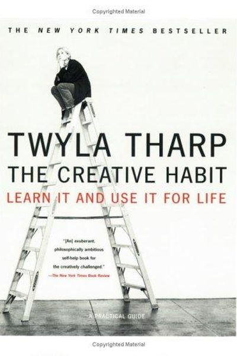

Library › Creativity
The Creative Habit — Summary & Key Lessons

Learn it and use it for life — the legendary choreographer's 35-year system for making creativity a daily habit.
📖 OPEN THE FULL INTERACTIVE BREAKDOWN →🌐 Read it in Hindi, Hinglish, Gujarati, Tamil & 22 more languages — free, with audio.
💡 The Big Idea
Twyla Tharp — one of the most prolific choreographers alive, with 130+ dances to her name — dismantles the myth of the lone genius. Creativity, she says, is a habit: a daily practice of preparation, ritual, and work. Her famous morning ritual: get up, call a cab, go to the gym — 'I use the same cab driver every morning at 5:30, so I can't negotiate or slack off.' Preparation (the box), ritual (the trigger), and 'scratching' (gathering material) turn inspiration from a gamble into an assembly line.
🧠 The 5 Key Lessons
Lesson 1: Creativity Is a Habit, Not a Gift
I Walk Into a White Room
Tharp's opening claim: creativity is not a mysterious bolt from the sky — it's a habit you build like any other, through daily practice. The most creative people are rarely the most gifted; they are the most consistent. Talent helps, but the habit of showing up and working turns talent into output.
📖 Example: Tharp choreographed 130+ pieces over 35 years by treating every day the same: wake, ritual, work. She compares herself to a professional athlete — nobody asks an athlete if they 'feel like' training; the training is the job. Read the full example →
⚡ Do this: Write your own definition of 'the habit of creativity' — what would daily showing-up look like in YOUR medium? Commit to one week of it.
Lesson 2: The Ritual: Your Daily Trigger
Rituals of Preparation
A ritual is a fixed, automatic action that tells your brain 'it's time to create.' Tharp's ritual: up at 5:30, call her cab driver (same driver, so there's accountability), go to the gym. The ritual removes the negotiation — you don't decide whether to work, you just follow the trigger. Rituals work because they bypass willpower.
📖 Example: Tharp's cab-driver trick is the perfect accountability hack: because the same driver is waiting, she can't bargain her way out of the gym. Other creators use coffee, a specific desk, or a walk — any fixed trigger that precedes work. Read the full example →
⚡ Do this: Design your ritual: one fixed action (coffee, walk, playlist) that always comes right before your creative block. Do it every day for 2 weeks — no exceptions.
Lesson 3: The Box: Constraints Set You Free
Your Creative DNA
Tharp's 'box' is a container for a project's idea — the theme, the material, the limits you choose. Paradoxically, unlimited freedom paralyzes; a box gives you something to push against. For each new work, she creates a literal box — a cardboard box with everything related to the project inside: photos, notes, music, objects.
📖 Example: For one dance, Tharp's box held a baseball and a glove, triggering a whole work about American ritual. The box forces choices — and choice, not freedom, is what produces art. Read the full example →
⚡ Do this: Create a physical (or digital) box for your current project: 10 items — images, words, objects — that capture its essence. Keep adding to it all week.
Lesson 4: Scratching: The Art of Gathering Material
Scratching
Before inspiration, there's scratching — the deliberate hunt for raw material: reading, watching, collecting, experimenting. Tharp scratches constantly: notebooks full of observations, books marked up, walks with music. Scratch hard enough and ideas surface; scratch lazily and the well stays empty.
📖 Example: When Tharp was commissioned for a ballet on the American Revolution, she scratched for months — reading diaries, listening to period music, visiting battlefields — before a single step existed. The work emerged from the pile. Read the full example →
⚡ Do this: Spend 3 sessions this week scratching for your project: one book or article, one piece of art or music, one real-world observation. Log everything.
Lesson 5: The Spin: Turn Failure Into Fuel
Spin
Tharp's 'spin' exercise: describe a past failure in one page — then rewrite it from the point of view of the person who profited most from it, and finally from a disinterested observer's view. The goal is perspective: failure is data, not identity. Every flop taught her what the next work needed; she treats bad reviews as research.
📖 Example: After a dance was panned, Tharp wrote the spin — from the critic's angle — and discovered the show really did have structural problems she'd been blind to. The next work fixed them. Failure, processed, became the best teacher she had. Read the full example →
⚡ Do this: Pick one recent failure. Write it three ways: your version, the version of whoever gained most from it, and a stranger's version. Note what the other two reveal.
✅ 5-Step Action Plan
- Define your creative habit — daily showing-up in your medium, for a week.
- Design a fixed ritual that precedes your work; run it 14 days straight.
- Build a project box with 10 essence-capturing items.
- Scratch 3 times this week — read, watch, observe, log.
- Spin one failure through three perspectives and extract the lesson.
⚠️ When This Doesn't Work
Tharp's 'creativity is a habit, not a talent' is the most practical creativity book ever — and Color Labs is its warning: the most creatively habitual startup of its era — daily rituals, ambitious product sessions, $41 million raised in a weekend — and the 'habit' produced an app nobody wanted, because creative discipline aimed at a fantasy is just disciplined fantasy. Tharp's rituals work when they're aimed at a real audience; Color's rituals were aimed at the founders' vision of themselves. Habit is the engine; market is the road.
💀 The Graveyard Proves It
🌈 Color Labs — $41M Before Launch, Deleted Within Months. Burn: $41M pre-launch — legendary burn. Read the full case study →
💬 Best Quotes from The Creative Habit
- “Creativity is a habit, and the best creativity is a result of good work habits.”
- “The box is everything. It's the habit of thinking where your ideas can live.”
- “I start every day of my life with a ritual.”
Interactive version: mark lessons as read, listen in your language, share quote cards.